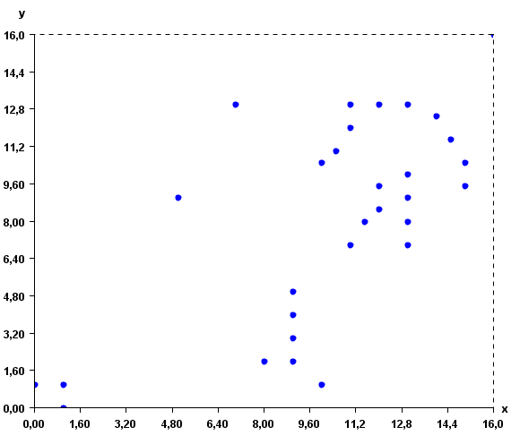

Visualizing instances using the Instance Viewer (SPMF documentation)
This example explains how to run the Instance Viewer of the SPMF open-source data mining library.
How to run this example?
- If you are using the graphical interface, (1) choose the "Vizualize_instances" algorithm, (2) select the input file "inputDBScan2.txt", (3) and click "Run algorithm".
- If you want to execute this example from the command line,
then execute this command:
java -jar spmf.jar run Vizualize_instances inputDBScan2.txt
in a folder containing spmf.jar and the example input file inputDBScan2.txt. - If you are using the source code version of SPMF, to run respectively this example, launch the file "MainTestInstanceViewerFile.java"in the package ca.pfv.SPMF.tests.
What is the Instance Viewer?
The Instance Viewer is a tool offered in SPMF for visualizing a set of instances used as input for clustering algorithms. The Instance Viewer provides some basic functions like zooming in, zooming out, printing, and saving the picture as an image. It is useful for visualizing the instances that will be given to a clustering algorithm as input. Visualizing instances can help to decide which algorithm should then be applied.What is the input of the Instance Viewer?
The input is a file containing several instances. The input file format is defined as follows.
The first lines (optional) specify the name of the attributes used for describing the instances. In this example, two attributes will be used, named X and Y. But note that more than two attributes could be used. Each attribute is specified on a separated line by the keyword "@ATTRIBUTEDEF=", followed by the attribute name
Then, each instance is described by two lines. The first line (which is optional) contains the string "@NAME=" followed by the name of the instance. Then, the second line provides a list of double values separated by single spaces.
An example of input is provided in the file "inputDBScan2.txt" of the SPMF distribution. The first two lines are optional metadata indicating the filetype and the source of the data. Then, the file contains 31 instances, each described by two attribute called X and Y.
@FILETYPE="Database of double vectors"
@SOURCE="SPMF SOFTWARE https://philippe-fournier-viger.com/spmf/"
@ATTRIBUTEDEF=X
@ATTRIBUTEDEF=Y
@NAME=Instance1
1 1
@NAME=Instance2
0 1
@NAME=Instance3
1 0
@NAME=Instance4
11 12
@NAME=Instance5
11 13
@NAME=Instance6
13 13
@NAME=Instance7
12 8.5
@NAME=Instance8
13 8
@NAME=Instance9
13 9
@NAME=Instance10
13 7
@NAME=Instance11
11 7
@NAME=Instance12
8 2
@NAME=Instance13
9 2
@NAME=Instance14
10 1
@NAME=Instance15
7 13
@NAME=Instance16
5 9
@NAME=Instance17
16 16
@NAME=Instance18
11.5 8
@NAME=Instance20
13 10
@NAME=Instance21
12 13
@NAME=Instance21
14 12.5
@NAME=Instance22
14.5 11.5
@NAME=Instance23
15 10.5
@NAME=Instance24
15 9.5
@NAME=Instance25
12 9.5
@NAME=Instance26
10.5 11
@NAME=Instance27
10 10.5
@NAME=Instance28
9 3
@NAME=Instance29
9 4
@NAME=Instance30
9 5
For example, the first instance is named "Instance1", and it is a vector with two values: 1 and 1 for the attributes X and Y, respectively.
What is the result of running theinstance viewer?
Running the Instance Viewer will display the instances visually. For example, for the above instances, the instances will be displayed as follows (note that this may vary depending on your version of SPMF).

Implementation details
The Instance Viewer has been implemented by reusing and extending some code provided by Yuriy Guskov under the MIT License for displaying charts.